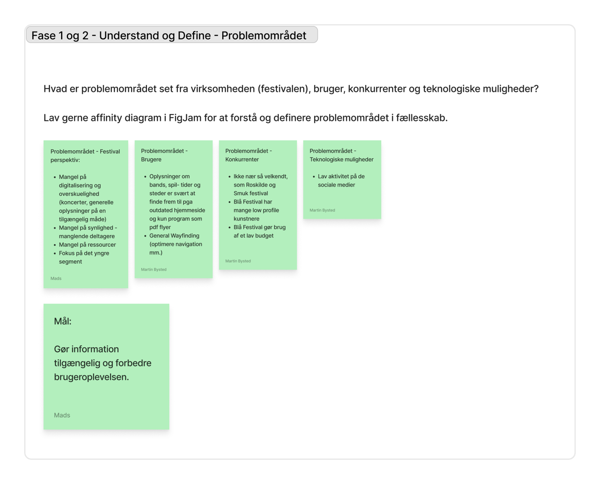
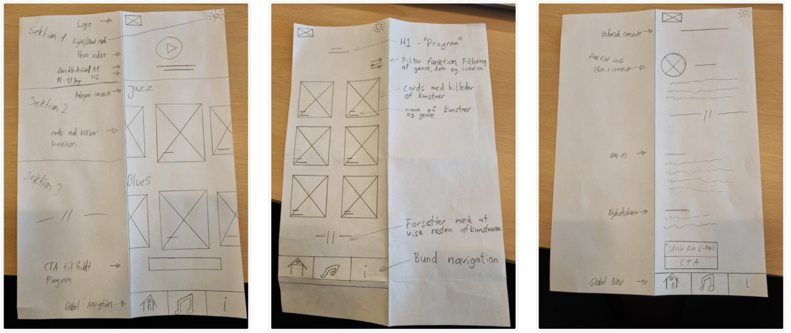
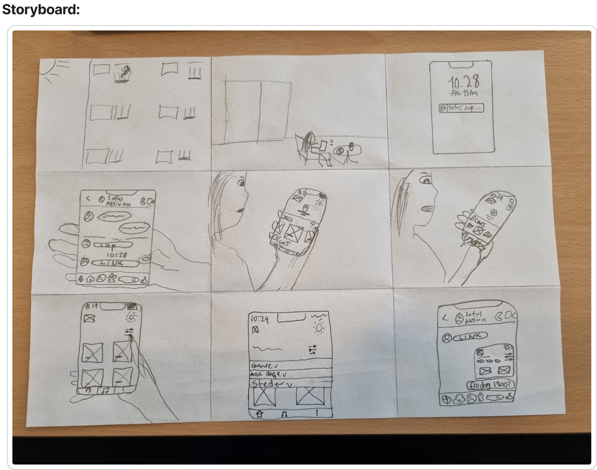
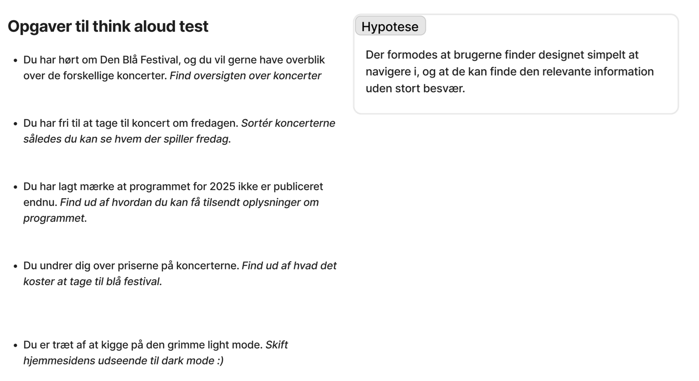

Fase 1 (Understand) og Fase 2 (Define)
Først og fremmest i designsprintet danne en samlet
forståelse og videns base med alle i gruppen. Derefter
forstå brugeren og hvad der danner mangel/brug for
produktet.
Det næste var i teamet, at evaluere alt det de kom frem til
i fase 1 og danne fokus. Dette bliver gjort ved at definere
specifikke kontekster og muligheder for potentielle mål.

Fase 3 (Sketch) og Fase 4 (Decide)
I danne fase genererede vi ideer hver især, dette bliver
gjort ved at kigge på inspiration for eksemplet på andre
sider samt brugt metoder som Crazy 8’s og Heatmap voting.
Det næste var, at vi i teamet skulle danne overblik over de
generede sketches og vælge elementer som alle er enige med,
er de som giver bedst resultat.

Fase 5: Prototype (Storyboard)
I denne fase samlede vi i teamet en fælles prototypeide,
fastholdt i vigtige beslutninger under prototypen.
Selve storyboardet skal være med til at koble til
brugertesten og dermed skabe struktur i det, der skal
testes.

Fase 6 - Validate (Think aloud test) spørgsmål
Dernæst gav vi i teamet vores produkt videre til nogle
informanter som skal validere og teste det, for at derefter
give feedback hvorpå teamet kan arbejde videre med
produktet.
Dertil fik vi opsat følgende tasks til vores Think Aloud
Tests.
